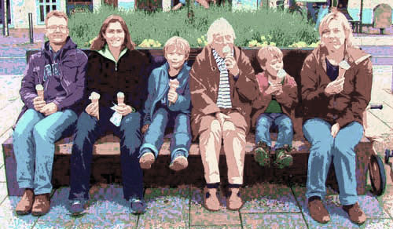

The demography module simulates for the following person events:
These events are simulated in random order (and household relocation and dwelling events are mixed into this random order of events). All demographic events are modeled using Markov models that apply transition probabilities to select whether events happen or not.
Aging is the simplest event modeled. Every simulation period, all persons age by the length of the simulation period, which usually is one year.
 The model checks for every woman if she is going to have a baby this simulation period. The probability for having a child is driven by two variables:
The model checks for every woman if she is going to have a baby this simulation period. The probability for having a child is driven by two variables:
The birth rates were derived from the U.S. Department of Health and Human Services: National Vital Statistics Reports, Vol. 51, No. 12, August 4, 2003. The differenciation between married/cohabitating and single women was derived heuristically.
 Children aged 15 or older can leave the parental household. Data for the U.S. were not readily available, Canadian statistics were used instead (Statistics Canada). The bar chart on the right shows that probabilities to leave the parental household distinguish men and women, as women tend to leave their parent's household slightly earlier than men do. Canadian statistics only provided probabilities from children aged 15 to 35. Probabilities for children aged 35 to 49 were derived heuristically.
Children aged 15 or older can leave the parental household. Data for the U.S. were not readily available, Canadian statistics were used instead (Statistics Canada). The bar chart on the right shows that probabilities to leave the parental household distinguish men and women, as women tend to leave their parent's household slightly earlier than men do. Canadian statistics only provided probabilities from children aged 15 to 35. Probabilities for children aged 35 to 49 were derived heuristically.

This module handles changes to the population except household relocation.